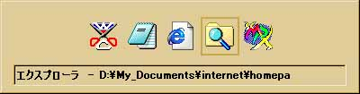

Ceta セットアップ手順書
５．Ceta をより便利に使って頂くために。
このセクションではCeta をより便利に使っていただくための幾つかの
「コツ」を説明します。ぜひお読みいただき、Ceta を手元に置いてお
きたいツールの一つとしてご活用下さい。
５−１．コンパイルしたプログラムの実行
５−２．Ceta 設定ファイル詳細解説
Ceta はコンパイル「支援」ソフトです。汎用化を目指したあまり、コンパイルまでは
どうにかできるようになったのですができあがった実行ファイルを自動検索して
実行させる所までは辿り着けませんでした。
そこでどうするかというと、常にエクスプローラを開いておくのです。Ceta と
エクスプローラをコンパイルの度に行き来して、実行ファイルを実行する。
マウスで行き来するのは面倒ですから、「ALT+TAB」キーを活用します。ALTキー
を押しながらTABキーを押すと、下のような画面が中央に現れます。

この状態でALTキーは押し下げたままでTABキーを何回か押すと、アプリケーション
を移動できます。これを使って、Ceta でコンパイル->ALT+TABでエクスプローラを
表示->実行ファイルのテスト->ALT+TABで再びCeta へ。のサイクルを繰り返します。
なお、基本的に実行ファイルの出力先は「ソースコードと同じフォルダ内」又は
「コンパイラのあるフォルダ内」のどちらかが一般的です。
いずれこの点も改良したいとは思っていますが、コンパイラによって出力ファイルの
生成先が違うし出力先の指定オプションも無かったり、あってもコンパイラによって又
違ってくるので、なかなか自動検索機能を付けがたいのです。またCeta は汎用ですから、
実行ファイルだけでなく、DLLファイルやリソースファイルを生成するときもあります。
それらの生成確認のためにも、常にエクスプローラによりファイルを監視している必要
があります。勘弁して下さい。
以下にCeta で使われている設定ファイルの内容例を示します。
[Ceat.ini]・・・主にCeta のウインドウの表示状態、「最近使ったファイル」設定。
left=20 //終了するときのCeta メインウインドウのX座標
top=36 //終了するときのCeta メインウインドウのY座標
width=673 //終了するときのCeta メインウインドウの幅
height=507 //終了するときのCeta メインウインドウの高さ
error_output=1 //終了するときのコンパイルメッセージ表示エリアの表示状態。1なら可視状態
error_output_color=clLime //コンパイルメッセージ表示エリアの文字色。BCBかDelphi定義のカラー定数文字列。
error_output_bkcolor=clBlack //コンパイルメッセージ表示エリアの背景色。BCBかDelphi定義のカラー定数文字列。
error_top=348 //コンパイルメッセージ表示エリアの高さ
scroll_speed=3 //自動スクロール時のスクロールタイミング。ミリ秒。
TBFile=1 //ツールボタンの表示。1なら表示する。これはファイル関連のツールボタン
TBEdit=1 //これは編集関連のツールボタン
TBSearch=1 //これは検索関連のツールボタン
TBWindow=1 //これはウインドウ関連のツールボタン
TBError=1 //これはコンパイルメッセージ表示エリアの表示・非表示ツールボタン
TBAutoS=1 //これは自動スクロール開始用ツールボタン
usedfile1=D:¥Origin¥Ceta¥hello.cpp //最近使ったファイルリスト。
usedfile2=D:¥Origin¥LSIC330C¥INCLUDE¥Stdio.h
usedfile3=D:¥Origin¥Ceta¥hello.c
usedfile4=D:¥Origin¥LSIC330C¥BIN¥hello_world.c
usedfile5=D:¥Origin¥Ceta¥hello_world.c
usedfile6=D:¥Origin¥Ceta¥skelton.c
usedfile7=D:¥Origin¥Ceta¥editter_set_dlg.cpp
usedfile8=D:¥My_Documents¥internet¥homepage¥index.html
usedfile9=D:¥Origin¥Ceta¥test.html
[Ceta_m.ini]・・・ファイルの拡張子と文字色設定の関連づけ。
filedescript0=Cソースファイル //拡張子の説明。
fileext0=.c //拡張子。
editortype0=c_src.ini //対応する文字色設定ファイル。
filedescript1=CPPソースファイル
fileext1=.cpp
editortype1=c_src.ini
filedescript2=ヘッダーファイル
fileext2=.h
editortype2=c_src.ini
filedescript3=CPPヘッダーファイル
fileext3=.hpp
editortype3=c_src.ini
filedescript4=txtファイル
fileext4=.txt
editortype4=plain_text.ini
filedescript5=htmlファイル
fileext5=.html
editortype5=html_text.ini
filedescript6=ini設定ファイル
fileext6=.ini
editortype6=plain_text.ini
[cmdline.ini]・・・「コマンド」メニュー設定ファイル。
各パラメータの最後に来る数字の順番でメニューに追加されていきます。
並び替えたかったら直接cmdline.iniを編集し、順番を変更して下さい。
いずれこの点も改良したいと思います。
commandname0=BCC32(for DOS)
commandline0=C:¥Program Files¥Borland¥Cbuilder4¥bin¥bcc32.exe -n"d:¥origin¥out_file"
commandenv0=0
commanderr0=1
commandname1=BCC32(for DLL)
commandline1=C:¥Program Files¥Borland¥Cbuilder4¥bin¥bcc32.exe -n"d:¥origin¥out_file" -WD
commandenv1=0
commanderr1=1
commandname2=BRC32
commandline2=C:¥Program Files¥Borland¥CBuilder4¥Bin¥brc32.exe
commandenv2=0
commanderr2=1
commandname3=IE5
commandline3=C:¥Program Files¥Internet Explorer¥Iexplore.exe
commandenv3=0
commanderr3=0
[helpmenu.ini]・・・「ヘルプ」メニュー設定ファイル。
各パラメータの最後に来る数字の順番でメニューに追加されていきます。
並び替えたかったら直接helpmenu.iniを編集し、順番を変更して下さい。
いずれこの点も改良したいと思います。
helpname0=BCB用関数リファレンス
helpfile0=C:¥Program Files¥Borland¥CBuilder4¥Help¥bcb4rtl.hlp
helpname1=BCC用WIN32APIヘルプ
helpfile1=C:¥Program Files¥Common Files¥Borland Shared¥MSHelp¥win32.hlp
helpname2=BCB用ツールヘルプ
helpfile2=C:¥Program Files¥Borland¥CBuilder4¥Help¥bcb4.hlp
helpname3=text_test
helpfile3=D:¥My_Documents¥THE_DARK_RIDE.txt
各文字色設定ファイルの詳細については解説しません。かなり大きいので、
手動で書き換えるよりはCeta による設定ダイアログボックスでの設定を推奨します。
それでは、Ceta を末永くご利用下さい。有り難うございました。
了